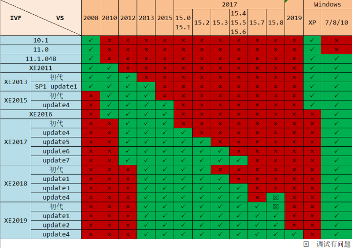
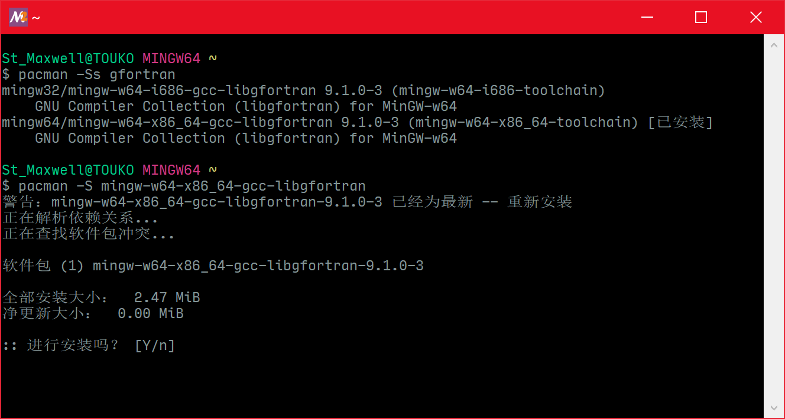
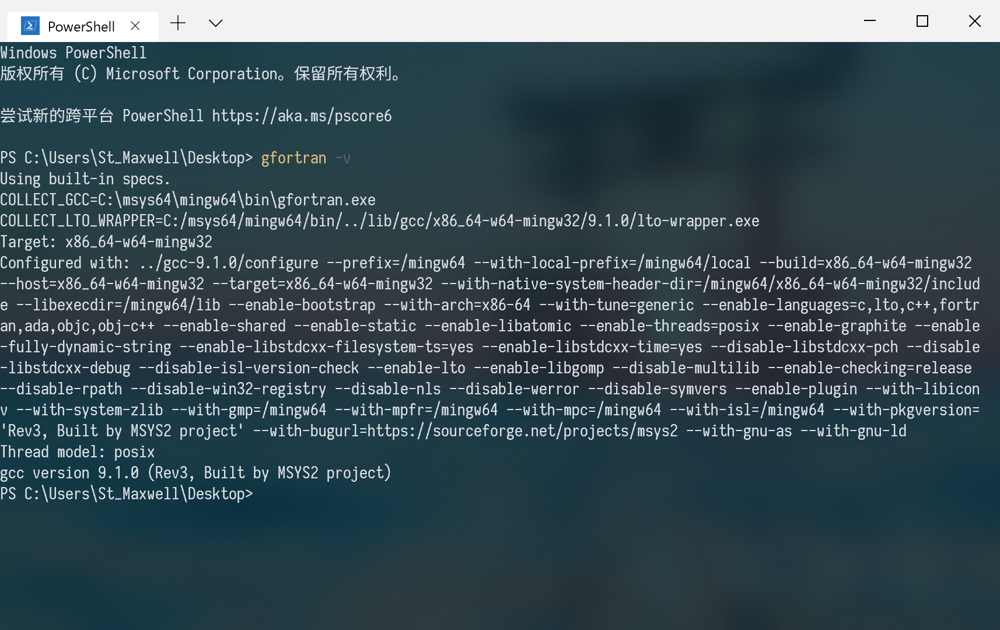
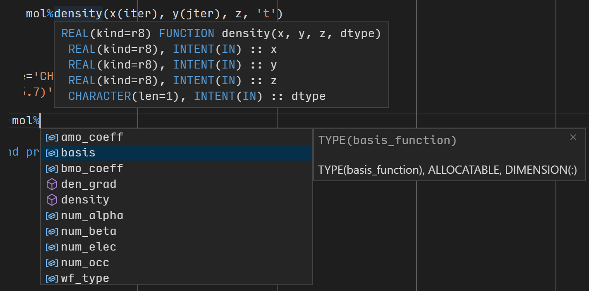
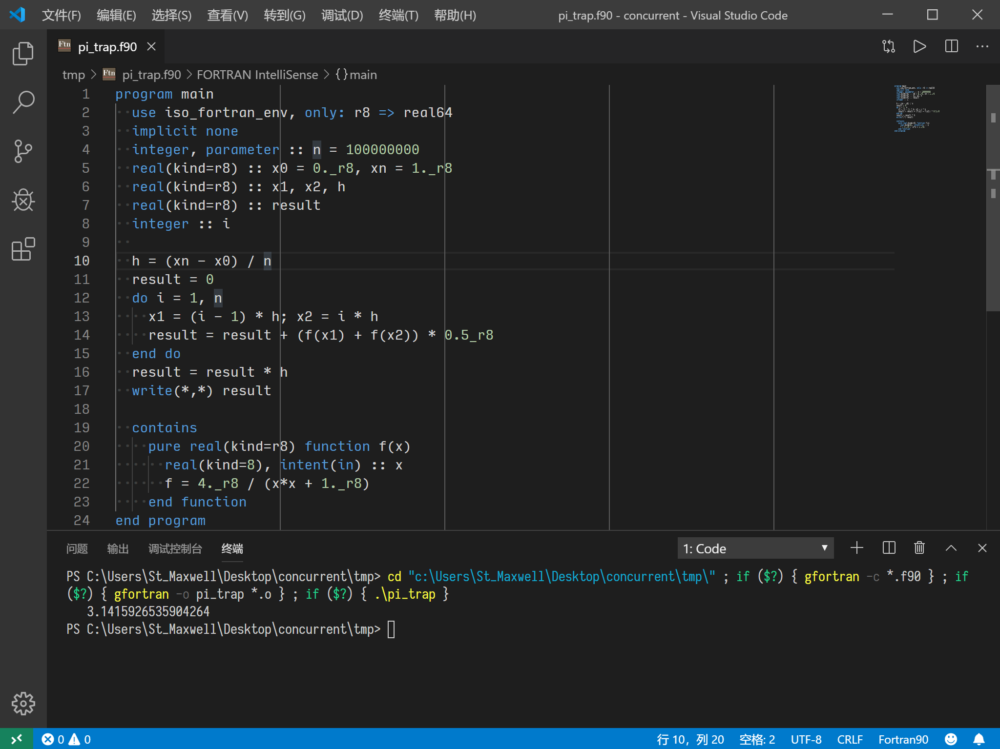
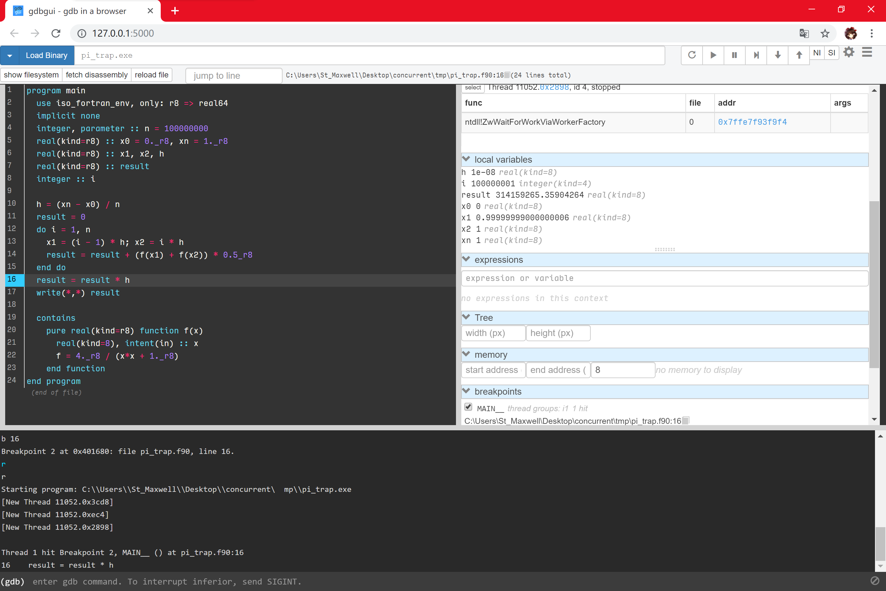

选择现代Fortran
FORTRAN 77肯定是不要再学了，或者至少不要写F77（因为可能免不了要看旧代码，所以也许还是要学）。不够我想说的是，也不要一直留在Fortran 90/95，最好继续学习Fortran 2003/2008以及Fortran 2018的新特性。Fortran 2003/2008提供了近乎完全的面向对象（自定义类型、类型绑定过程、抽象类、继承、多态等）的支持，以及新的内置过程等。虽然不见得所有新特性都用得上，但我认为是值得学的。
关于书，彭国伦的《Fortran 95程序设计》还是很优秀的，选择用这本书入门完全可以。但是既然推荐继续学习Fortran 2003/2008，肯定要看更多的书。直接学习Stephen J. Chapman的《Fortran 95/2003程序设计》也可以，可惜这书的中译版质量有点那啥，比较在意的话还是看彭国伦的吧。其他的中文书就不太推荐了，比如《Fortran权威指南》，声称涵盖了F2003，实际上只是提了一下（不到4页的内容）。P.S. 今年（2019年）有一本新的中文Fortran书《FORTRAN程序设计权威指南》，看了一下目录，似乎介绍了F2003/2008的特性，也许值得一试（但仍然想吐槽标题用的是全部大写的FORTRAN）。
于是剩下的只有英文书。其实原则上看Modern Fortran Explained就足够了（这书似乎算是Fortran语言的Bible？），最新版包括了Fortran 2018的内容。除此之外我想推荐的是Modern Fortran in Practice，但是这个书并不是入门的教科书，而是以实际案例为主的cookbook。建议基本的语法都学会了之后再看。
选择Fortran编译器
编译器的选择也受现代Fortran这一选择的影响，也就是不推荐对新标准支持不好的编译器。当然实际上也受是否流行影响。至少我只会考虑gfortran、Intel Visual Fortran、PGI Fortran。
首先建议看一下各种Fortran编译器对语言标准的支持情况：Compiler Support for the Fortran 2008 Standard、Compiler Support for the Fortran 2018 Standard
其实IVF是最受推荐的，但我并不打算介绍。因为IVF相当流行，所以我没必要再讲如何安装使用IVF。其次IVF是收费的，体积也非常大。我觉得除非需要做一些正经的工作，那么再考虑使用。当然IVF是可以以学生身份申请到免费的，这个就请自行解决（我申请过一次，但是被拒绝了……于是我用着盗版的IVF）。这里贴一下Visual Studio和IVF版本匹配的图（来自Fortran Coder群）：

VS和IVF建议安装较新的版本，2013版本什么的就别再用了。
这里顺便提一下PGI Fortran。PGF有免费的社区版，所以选择PGF就可以心安理得地用了。但是PGF的问题在于用起来相对比较麻烦，因为PGI Visual Fortran将被废除。实际上最新的PGF 19无法使用VS在GUI界面编写和编译，只能通过命令行使用（安装PGF时好像会附带一个基于Java的图形界面的调试器，但编辑和编译应该是没有自带的图形界面）。此外PGF仍然对VS有依赖，在安装PGF之前需要安装VS。
最终就是要介绍gfortran。gfortran是自由软件，体积小，对Fortran新标准支持较好，编译得到的程序执行速度也不错。所以也推荐使用（推荐程度大概是IVF>gfortran>PGF）。然后我还想多说一句，其实我很期待LLVM的Fortran编译器。LLVM之前有Flang编译器，但是这个Flang项目已经停了，将由F18编译器接替。F18编译器在今年年底应该会开发完，到时候想尝试一下。
需要的软件和插件
其实我不太想把配置的整个步骤都详细介绍。因为我嫌麻烦；另外这些东西要么有手册教程，要么其他人有写过文章介绍，我没必要写。所以有些地方我可能只会贴个链接。
安装gfortran
那么首先是安装gfortran。自行编译肯定不考虑，如果您能自行编译gfortran，那肯定没必要看我的文章了。我们选择直接下载已编译好的二进制文件。如果你搜索「安装gfortran」，绝大多数文章都是告诉你安装mingw-w64。但我更想推荐通过MSYS2安装gfortran。
首先进入www.msys2.org下载安装MSYS2（我想大部分人应该都是选择x86_64），安装的方法根据网站首页的教程照着做即可。安装并配置好后，通过MSYS2的包管理程序下载安装gfortran。MSYS2的使用方法见wiki，我在这里介绍最重要的两个命令：pacman -Ss搜索程序，pacman -S安装程序。
首先安装gcc，输入pacman -Ss gcc，将会看到很多程序。需要安装的是x86_64的gcc（mingw-w64-x86_64-gcc）和名字里带有fortran的（全安装就是了）。依次输入pacman -S mingw-w64-x86_64-gcc安装gcc以及其他需要安装的程序即可。

安装完成之后，要设置gfortran、gdb的环境变量。这些程序的位置应该都在MSYS2安装文件夹的mingw64\bin这个位置下，把完整路径添加到PATH变量。我们打开终端（推荐Windows Terminal），输入gfortran -v，如果输出类似下图，说明安装成功。顺便也测试一下gcc -v和gdb -v看看是否正常。

安装VS Code和插件
推荐使用Visual Studio Code编辑器编写Fortran代码。安装VS Code就没必要教了，自行搜索安装即可。
关于插件，将按后述的具体需求依次介绍。而且插件的设置因人而异，不必完全照抄我的，最好自己研究插件的manual。
一定要安装的插件是Modern Fortran，提供Fortran的语法高亮，语法检查等功能。插件安装之后，进入设置的JSON文件，添加以下设置1
2
3
4"fortran.includePaths": [
"/usr/bin",
"C:\\msys64\\mingw64\\bin\\"
],
告诉插件编译器的位置（第一个路径是WSL子系统里gfortran的路径，如果你不用WSL或其中没有安装gfortran，就不必写这个路径）。
此外推荐安装FORTRAN IntelliSense，用于Fortran代码的智能提示。

安装这个插件前需要安装fortran-language-server，安装方法也很简单，pip install fortran-language-server即可。什么？不知道pip是什么？这年头还能不会一点Python吗？快安装Python和pip。
编译和运行
首先我要说明一点，这一段提供的方法仅适用于比较简单的编译或者例行的编译。对于较大的工程，应该选择Make，但是我目前也不懂这个，如果有需求请自行学习。
这一功能由Code Runner插件提供。添加以下设置1
2
3
4
5
6
7"code-runner.executorMapByFileExtension": {
".f90": "cd $dir && gfortran -c *.f90 && gfortran -o $fileNameWithoutExt *.o && $dir$fileNameWithoutExt",
".c": "cd $dir && gcc $fileName -o $fileNameWithoutExt && $dir$fileNameWithoutExt"
},
"code-runner.saveFileBeforeRun": true,
"code-runner.defaultLanguage": "fortran",
"code-runner.runInTerminal": true,
我这里把C的配置也写进去了。Fortran那部分的命令其实是1
2
3
41. cd 到当前目录
2. gfortran -c *.f90 编译当前目录下所有.f90文件
3. gfortran -o $fileNameWithoutExt *o 链接.o文件得到可执行文件，可执行文件的名字是$fileNameWithoutExt，指不包含拓展名的当前文件的名字。
4. /$fileNameWithoutExt 运行编译得到的可执行文件。
点击右上角的三角形图标即可编译运行代码。

再强调一遍，这个配置仅供参考，并且对于需要额外的编译选项或复杂工程这个插件并不够用。
调试
程序的调试使用gdb，教程可以看GDB 入门教程。
完全使用命令行的gdb调试也是可以的，但我介绍两个基于gdb的图形界面调试方法。
第一个是使用VS Code的插件，因为有一篇文章已经介绍过了，所以我只贴链接：Visual Studio Code 搭建 Fortran 调试环境
第二个是使用gdbgui，安装很简单，pip install gdbgui就完事儿了。
运行的方法是gdbgui xxx.exe，将在浏览器中打开调试界面。

可以在底部输入gdb的命令。总之请自行把玩。